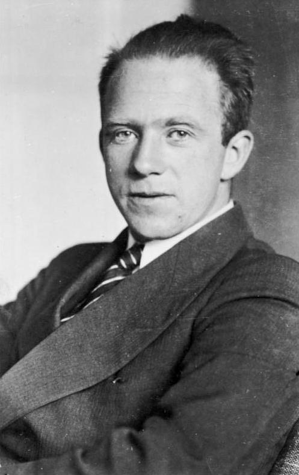

Homepage
Werner Heisenberg

Who is Werner Heisenberg?
Werner Karl Heisenberg (5 December 1901 - 1 February 1976) was a German theoretical physicist and one of the key pioneers of quantum mechanics. He published his work in 1925 in a breakthrough paper. In the subsequent series of papers with Max Born and Pascual Jordan, during the same year, this matrix formulation of quantum mechanics was substantially elaborated.
Honors and Awards
- Honorary doctorates from the University of Bruxelles, the Technological University of Karlsruhe, and the University of Budapest.
- Order of Merit of Bavaria
- Romano Guardini Prize
- Grand Cross for Federal Service with Star
- Knight of the Order of Merit (Civil Class)
- Elected a Foreign Member of the Royal Society (ForMemRS) in 1955
- 1932-Nobel Prize in Physics
- 1933-Max-Planck-Medaille of the Deutsche Physikalische Gesellschaft
 Breaking Bad is an American crime drama television serie created and produced by Vince Gilligan.
Breaking Bad is an American crime drama television serie created and produced by Vince Gilligan.
All text in this page is quoted from other sites. Check sources from here.